Trees ca. 10 m tall.
ಅಂದಾಜು 10 ಮೀ. ಎತ್ತರದವರೆಗಿನ ಮರಗಳು.
Trees ca. 10 m tall.
மரங்கள் 10 மீ. உயரம் வரை வளரக்கூடியது.
Bark smooth, greyish; blaze cream.
ತೊಗಟೆ ನಯವಾಗಿದ್ದು,ಬೂದು ಬಣ್ಣದ ಛಾಯೆ ಹೊಂದಿರುತ್ತದೆ;ಕಚ್ಚು ಮಾಡಿದ ಜಾಗ ಕೆನೆ ಬಣ್ಣದಲ್ಲಿರುತ್ತದೆ.
Bark smooth, greyish; blaze cream.
மரத்தின் பட்டை வழுவழுப்பானது, சாம்பல் நிறமானது; உள்பட்டை கீரிம் நிறமானது.
Branchlets terete, glabrous.
ಕಿರುಕೊಂಬೆಗಳು ದುಂಡಾಗಿದ್ದು ರೋಮರಹಿತವಾಗಿರುತ್ತವೆ.
Branchlets terete, glabrous.
சிறியநுனிக்கிளைகள் குறுக்குவெட்டுத் தோற்றத்தில் வளையமானது, உரோமங்களற்றது.
Leaves simple, alternate, spiral; petiole 0 5-2 cm long, canaliculate above, glabrous; lamina 4-17 (-21) x 2-7 (-9) cm, elliptic to elliptic-ovate, apex acuminate, base acute to attenuate, margin crenate-serrate, sometimes revolute, coriaceous, glabrous; midrib canaliculate above; secondary_nerves 6-9 pairs; tertiary_nerves broadly reticulate.
ಎಲೆಗಳು ಸರಳವಾಗಿದ್ದು ಪರ್ಯಾಯ ಮತ್ತು ಸುತ್ತು ಜೋಡನಾ ವ್ಯವಸ್ಥೆಯಲ್ಲಿರುತ್ತವೆ; ತೊಟ್ಟುಗಳು 0.5 –-2 ಸೆಂ.ಮೀ. ಉದ್ದವಿದ್ದು, ಮೇಲ್ಭಾಗದಲ್ಲಿ ಕಾಲುವೆಗೆರೆ ಸಮೇತವಿದ್ದು, ರೋಮರಹಿತವಾಗಿರುತ್ತವೆ; ಪತ್ರಗಳು 4– 17(-21) X 2 – 7(-9) ಸೆಂ.ಮೀ. ಗಾತ್ರ, ಅಂಡವೃತ್ತದಿಂದ, ಅಂಡವೃತ್ತ-ಅಂಡದವರೆಗಿನ ಆಕಾರ , ಕ್ರಮೇಣ ಚೂಪಾಗುವ ಮಾದರಿಯ ತುದಿ, ಚೂಪಾದುದರಿಂದ ಬೆಣೆಯಾಕಾರದವರೆಗಿನ ಮಾದರಿಯ ಬುಡ ಹೊಂದಿದ್ದು ,ಅಂಚು ದುಂಡೇಣು-ಗರಗಸ ದಂತಿತವಾಗಿರುತ್ತದೆ ಕೆಲವು ವೇಳೆ ಹಿಂಸುರುಳಿಯಾಗಿರುತ್ತದೆ,ಪತ್ರಗಳ ಮೇಲ್ಮೈ ತೊಗಲನ್ನೋಲುವ ಮಾದರಿಯಲ್ಲಿದ್ದು ರೋಮರಹಿತವಾಗಿರುತ್ತವೆ, ಮಧ್ಯನಾಳ ಪತ್ರದ ಮೇಲ್ಭಾಗದಲ್ಲಿ ಕಾಲುವೆಗೆರೆ ಸಮೇತವಿರುತ್ತದೆ; ಎರಡನೇ ದರ್ಜೆಯ ನಾಳಗಳು 6 – 9 ಜೋಡಿಗಳಿರುತ್ತವೆ;ಮೂರನೇ ದರ್ಜೆಯ ನಾಳಗಳು ವಿಶಾಲ ಜಾಲಬಂಧ ನಾಳ ವಿನ್ಯಾಸದಲ್ಲಿರುತ್ತವೆ.
Leaves simple, alternate, spiral; petiole 0 5-2 cm long, canaliculate above, glabrous; lamina 4-17 (-21) x 2-7 (-9) cm, elliptic to elliptic-ovate, apex acuminate, base acute to attenuate, margin crenate-serrate, sometimes revolute, coriaceous, glabrous; midrib canaliculate above; secondary_nerves 6-9 pairs; tertiary_nerves broadly reticulate.
இலைகள் தனித்தவை, மாற்றுஅடுக்கமானவை, சுழல் போன்று அமைந்தவை; இலைக்காம்பு 0.5-2 செ.மீ. நீளமானது, குறுக்குவெட்டுத் தோற்றத்தில் கேனாலிகுலேட், உரோமங்களற்றது; இலை அலகு 4-17 (-21) X 2-7 (-9) செ.மீ., நீள்வட்ட வடிவானது முதல் நீள்வட்டம்-முட்டை வடிவானது, அலகின் நுனி அதிக்கூரியது, அலகின் தளம் கூரியது முதல் அட்டனுவேட், அலகின் விளிம்பு பிறை போன்ற பற்களுடையது-ரம்ப பற்களுடையது, சிலசமயங்களில் பின்புறம் வளைந்து (ரெவலுட்) காணப்படும், கோரியேசியஸ், உரோமங்களற்றது; மையநரம்பு மேற்புறத்தில் அலகின் பரப்பைவிட பள்ளமானது; இரண்டாம் நிலை நரம்புகள் 6-9 ஜோடிகள்; மூன்றாம் நிலை நரம்புகள் அகன்ற வலைப்பின்னல் போன்றவை.
Inflorescence axillary simple or branched spikes; flowers sessile, white; stamens many.
ಪುಷ್ಪಮಂಜರಿ ಅಕ್ಷಾಕಂಕುಳಿನಲ್ಲಿನ ಸರಳ ಅಥವಾ ಕವಲೊಡೆದ ಕದಿರು ಮಂಜರಿ ಮಾದರಿಯವು.;ಹೂಗಳು ತೊಟ್ಟುರಹಿತವಾಗಿದ್ದು, ಬಿಳಿಬಣ್ಣ ಹೊಂದಿರುತ್ತವೆ;ಕೇಸರಗಳು ಹಲವಾರು.
Inflorescence axillary simple or branched spikes; flowers sessile, white; stamens many.
மஞ்சரி இலைக்கோணங்களில் காணப்படுபவை, கிளைகளற்ற அல்லது கிளைத்த ஸ்பைக் வகை மஞ்சரி; மலர்கள் காம்பற்றது, வெள்ளை நிறமானது; மகரந்தாள்கள் எண்ணற்றது.
Drupe, ampulliform, ribbed, up to 0.7 cm across.
ಡ್ರೂಪ್ಗಳು ಕಳಸದ ಆಕಾರದಲ್ಲಿದ್ದು, ಉಬ್ಬು ತಗ್ಗುಳ್ಳ ಗೆರೆಗಳನ್ನು ಸಮೇತವಿದ್ದು,0.7 ಸೆಂ.ಮೀ.ವರೆಗಿನ ಅಡ್ಡಗಲತೆಯನ್ನು ಹೊಂದಿರುತ್ತವೆ.
Drupe, ampulliform, ribbed, up to 0.7 cm across.
உள்ளோட்டுத்தசைகனி (ட்ரூப்), அம்புல்லிபார்ம் வடிவானது, மேடு மற்றும் பள்ளங்களுடையது, 0.7 செ.மீ. குறுக்களவுடையது.
 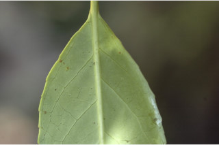
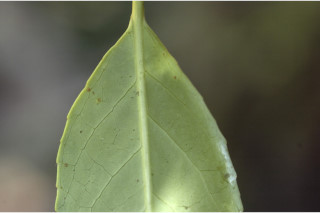
 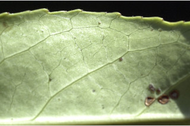
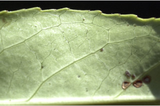
 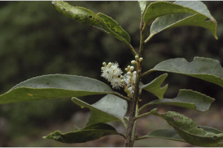
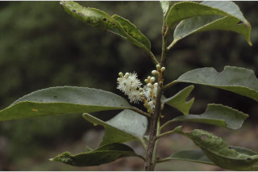
 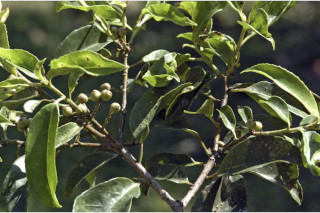
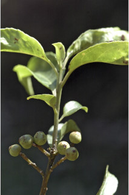
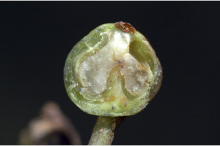
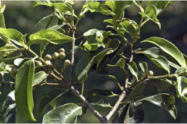
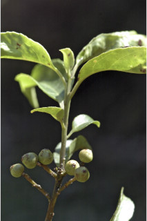
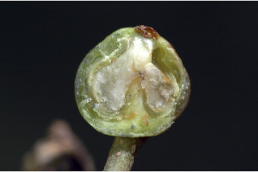